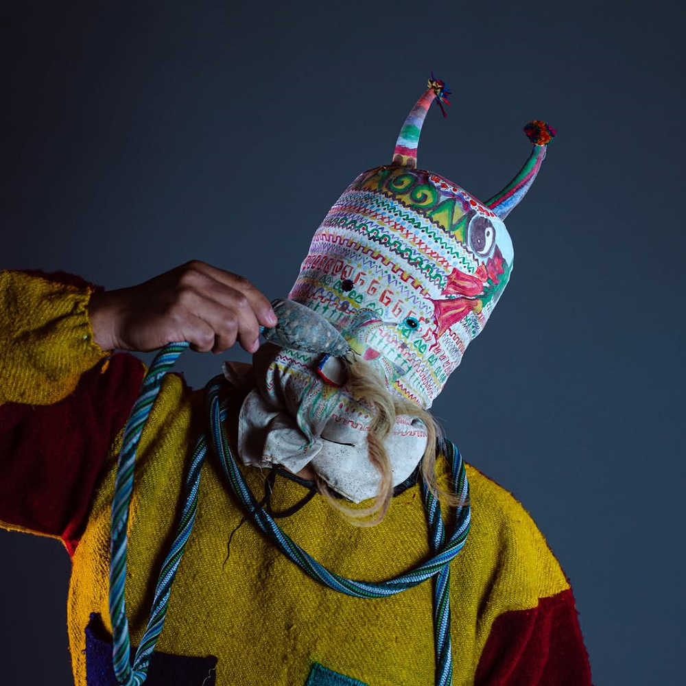

El sonido de la Navidad Saraguro
Apunte 014
Inicio > Blog Bitácora de un músico > Apunte 014
La fiesta que enseña a los cuerpos a sonar
Los Saraguro son una sociedad indígena de habla quechua del sur de Ecuador, con comunidades ubicadas principalmente en las provincias de Loja y Zamora Chinchipe. Su historia, idioma, agricultura, prácticas rituales, influencias católicas y relaciones comunitarias conforman un rico universo cultural que no puede reducirse al "folclore andino" ni a los trajes festivos.
Dentro de ese universo, la Navidad se convierte en un ciclo ritual en torno al Niño Dios, que incluye música, danza, comida, vestimenta, obligaciones devocionales, representaciones cómicas y un grupo de artistas conocidos como juguetes.
El sonido le da estructura a este ciclo. Se manifiesta en los ensayos, los roles, el movimiento, la voz, el habla cómica, la imitación de animales y la devoción pública.
La música contribuye a la construcción del ritual. Los músicos preparan sus cuerpos. Los sarawis cantan su devoción. Los wikis bromean. Los ajas marcan su presencia con risas vocalizadas. Las figuras de animales se mueven al ritmo de su propia música y coreografía.
La fiesta se enseña, se ensaya y se representa con sonido.
El Tayta Maestro y la arquitectura de la preparación
La figura musical central es el Tayta Maestro, el músico responsable de ejecutar la música y preparar las coreografías de la fiesta. Trabaja con un músico acompañante, llamado coteja o chulla. Su función no se limita a tocar: él prepara. Separa danzas, canciones, formas rituales, escenas poéticas y escenas cómicas en unidades representables.
Esto cambia el significado de la música. En este contexto no es un adorno colocado junto a la acción ritual, sino parte de la maquinaria que la hace posible. El Maestro enseña a la fiesta cómo se va a desarrollar.
Esto también significa que la Navidad de los Saraguro no es una erupción espontánea de "tradición". El evento público depende del ensayo, la memoria, la disciplina y la coordinación. La fiesta parece festiva porque ya ha sido trabajada.
Juguetes y el sonido asignado a los cuerpos
Los intérpretes de la coreografía navideña se llaman juguetes. La palabra no debe simplificarse entendiéndola en su sentido literal. Aquí se refiere a los participantes del ritual: sarawis o arawis, wikis, ajas, figuras de animales como el oso, el león y el tigre con sus paileros o guardianes, gigantes y ushkus.
Lo interesante no es que la fiesta incluya muchos personajes, sino que cada uno cumple una función sonora y corporal diferente.
Los sarawis cantan y bailan con devoción. Rinden homenaje vocal al Niño Dios, no como una creencia abstracta, sino a través de cantos, versos y movimientos cuidadosamente ensayados.
Los wikis aportan un lenguaje cómico y una acción picaresca. Su sonido no es música en el sentido estricto. Es broma, interrupción, juego verbal, interacción social. Generan orden mediante la risa, en lugar de la solemnidad.
Los ajas, también llamados diablicos, se caracterizan por sus elaborados trajes hechos de musgos y otros materiales vegetales, su jerarquía y su voz. Su vocalización, similar a una risa, "aja, ja, ja", no es un ruido aleatorio. Forma parte de la identidad de los personajes. Su presencia se hace patente a través de su sonido.
Así, el festín distribuye el sonido entre los distintos roles. Uno canta. Otro bromea. Otro vocaliza al personaje. Otro vigila. Otro baila. El resultado no es una banda sonora. Es una división sonora del trabajo ritual.
Animales, guardianes y coreografía
Las figuras de los animales hacen que la estructura sea aún más clara. El oso, el león y el tigre aparecen con sus paileros, o guardianes. No se limitan a "representar" animales. Imitan el comportamiento mediante el vestuario, la parodia, unas coreografías especiales y su propia música.
La animalidad aquí no es mera simbología. Se representa bajo disciplina musical. El animal no se libera en el caos. Entra en el festín a través de una relación controlada: animal y guardián, movimiento y melodía, parodia y devoción. El pailero enmarca el cuerpo del animal. La música le da ritmo. La coreografía lo hace reconocible.
Los ushkus, que representan a los galinazos, llevan esto aún más lejos. Sus trajes están confeccionados con un armazón de carrizo y tela negra, y su danza imita los movimientos de las aves. Es un mecanismo pequeño pero poderoso: ave en armazón, armazón en traje, traje en movimiento, movimiento en música.
El mundo animal local no solo se menciona, sino que se reconstruye como sonido interpretable.
El ensayo como memoria oculta
Uno de los detalles más significativos de la celebración es que las danzas, las canciones y la música se aprenden durante meses de ensayo. El festejo público es solo el límite visible de un proceso mucho más largo.
Esto es importante porque impide una interpretación superficial de la celebración como una "tradición viva" que fluye naturalmente a través de la comunidad. Aquí nada surge espontáneamente. Todo está preparado.
El Maestro entrena a los intérpretes. Se asignan los roles. Se aprenden las escenas. Se repiten las canciones. Se perfeccionan las acciones cómicas. Se disciplinan los movimientos de los animales. La celebración se hace pública solo después de que la memoria ha pasado por los cuerpos.
En ese sentido, el ensayo no es algo preliminar. Es una infraestructura ritual.
Lo que el festín hace audible
La Navidad Saraguro demuestra que el sonido puede organizar el ritual sin reducirse a la mera "música". La música es fundamental, en efecto, pero no actúa sola. El sonido también se manifiesta como canto, discurso cómico, vocalización de personajes, imitación de animales, ritmo coreográfico y movimiento público.
El Tayta Maestro y su chulla sostienen el eje musical. Los demás expresan devoción, alegría, identidad... Por lo tanto, la fiesta no se percibe como un único evento musical, sino como una distribución de deberes.
El sonido indica a cada participante qué tipo de presencia ritual debe asumir.
Lecturas
- Chalán Guamán, Luis Aurelio (1994). La Celebración de la Navidad en Saraguro: sus personajes. En Linda Belote & Jim Belote (comp.) Los Saraguros: fiesta y ritualidad. Quito: Abya-Yala / Federación Interprovincial de Indígenas de Saraguro, pp. 27-61.
- Instituto Nacional de Patrimonio Cultural (Ecuador) (2012). Memoria oral del pueblo Saraguro. Loja, Ecuador: Gráficas Hernández Cía. Ltda.
- Samaniego López, Mariela Verónica et al. (2024). E-book ilustrado sobre la fiesta de Navidad en la cultura Saraguro. Chakiñan, Revista de Ciencias Sociales y Humanidades, 23, pp. 171-198.